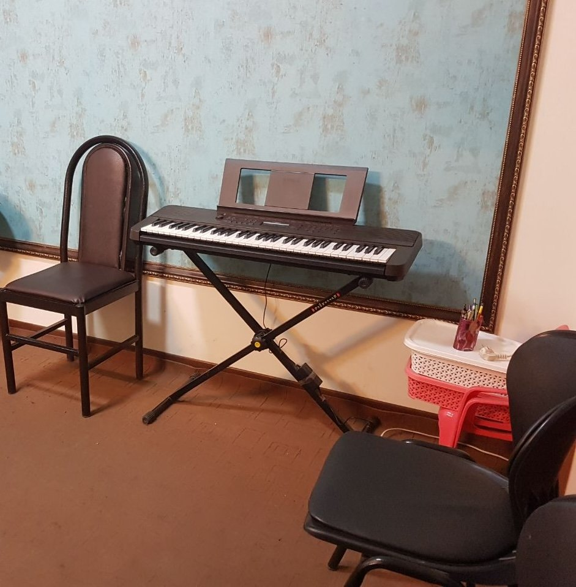

کلاس خصوصی
سنتور، تار، سهتار، پیانو، ویولن، گیتار، آواز و سازهای کوبهای؛ یک استاد و یک هنرجو، متناسب با سطح و هدف هر هنرجو.
از ۷ سالکلاس سنتوریک پیوند در متن
کودک، نوجوان، بزرگسال

سنتور، تار، سهتار، پیانو، ویولن، گیتار، آواز و سازهای کوبهای؛ یک استاد و یک هنرجو، متناسب با سطح و هدف هر هنرجو.

پنجشنبهها هنرجویان کنار کلاس خصوصیشان با هم مینوازند، با سرپرستی مسعود آرامش.
خواندن نت، ریتم و شنیدن موسیقی، نزد مسعود آرامش و علی شمس، در همان روزهایی که در آموزشگاه هستند.
گروه نوازی کلاسی است که هنرجویان، کنار کلاس خصوصیشان، با هم مینوازند. ویژهٔ کودکان، نوجوانان و بزرگسالان است و پنجشنبهها با سرپرستی مسعود آرامش برگزار میشود.
پاسخ نمونه برای دیدن باز شدن.
نمونهٔ متن نقلقول 1؛ فقط برای دیدن کارت. در سایت تا وقتی نقلقول واقعی نباشد این بخش پنهان است.
نمونهٔ متن نقلقول 2؛ فقط برای دیدن کارت. در سایت تا وقتی نقلقول واقعی نباشد این بخش پنهان است.
نمونهٔ متن نقلقول 3؛ فقط برای دیدن کارت. در سایت تا وقتی نقلقول واقعی نباشد این بخش پنهان است.
نمونهٔ متن نقلقول 4؛ فقط برای دیدن کارت. در سایت تا وقتی نقلقول واقعی نباشد این بخش پنهان است.
پیام ارسال نشد. لطفا موارد مشخصشده را اصلاح کنید.